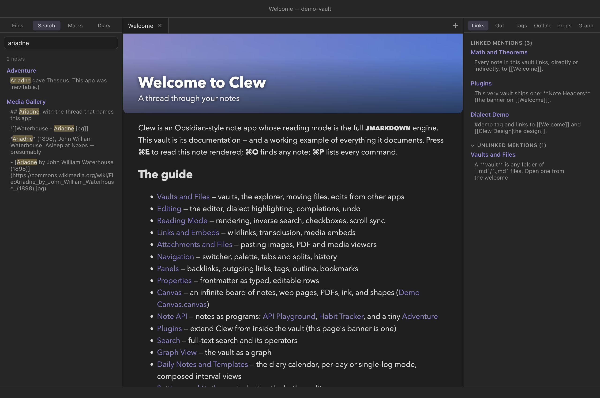

Workspace
Search
Full-text search is the blunt instrument of a note vault, and a good one: type a few words, land on the line where you wrote them. Clew's search reads the files themselves at query time, so results cannot go stale, and composes plain terms with a small, sharp set of operators for phrases, paths, file names, and tags. This chapter covers the search panel, every operator the engine supports, find within a single note, and the boundary where search hands over to queries.
Opening search
Press ⌘⇧F (Search in all files, also under Edit → Search in All Files). The left sidebar opens on its Search tool with the input focused; results appear as you type, after a brief pause. There is no search button and no need for one — refine the text and the results follow.


Reading the results
Results are grouped by note, with a count of matching notes at the top. Each group shows the note's name — click it to open the note — followed by one snippet per matching line, with the matched text highlighted. Clicking a snippet opens the note in source mode at that line, cursor placed, so a search is never more than two clicks from the exact sentence you were hunting.
Two ceilings keep giant vaults responsive: search stops after 200 matching notes, and shows at most 20 matching lines per note. If you hit either, the query is too broad to be useful anyway — add a term or an operator.
The query language
A query is a sequence of terms and operators separated by spaces. Everything is case-insensitive, and every part must match — the parts are AND-ed together, so each additional term narrows the results. This is the complete operator set:
Plain terms
A bare word matches notes containing it anywhere in their text, as a substring. Several words may match in entirely different parts of the note — they are independent conditions, not a phrase.
You search
replicator dynamics
finds notes containing both replicator and dynamics,
whether or not they are adjacent. Because matching is by substring,
graph also matches photograph — quote a phrase or
add terms when that bites.
"Quoted phrases"
Double quotes turn several words into one condition: the exact sequence, spaces and all, still case-insensitive.
You search
"evolutionarily stable strategy"matches only notes containing that exact phrase.
path:
path: keeps only notes whose vault path contains the given
text — folders and file name both count, so it is the operator for
scoping a search to a corner of the vault.
You search
deadline path:Projects
finds deadline only in notes under a path containing
Projects — Projects/Clew/Notes.md and
Old Projects/Archive.md alike, since the test is a
substring of the whole path.
file:
file: is the same idea applied to the file name alone,
ignoring the folders above it.
You search
file:meeting agendafinds notes whose file name contains meeting and whose text contains agenda.
tag:
tag: keeps only notes carrying the given tag — from an
inline #tag or the frontmatter tags property.
The # is optional: tag:#draft and
tag:draft are the same query. Nested tags match their
parents, so tag:project also finds notes tagged
#project/clew.
You search
theorem tag:#demo path:Features
finds notes mentioning theorem, tagged #demo,
under a path containing Features — the demo vault's engine
stress-tests, as it happens.
unindexed list, whose
folders are still listed in the explorer and still open normally. If a
note you can see is not findable, that is the first thing to check.
Filters without terms
A query of nothing but filters is legal and useful: with no text terms
to match, every note passing the filters is listed, without snippets.
tag:#guide lists every guide note;
path:Essays file:2026 lists this year's essays. The search
panel doubles as a quick file lister this way.
[[links]] and YAML values), but it means markup can
match too: searching tags hits every frontmatter block
with a tags: line. Search covers notes — Markdown files —
not canvases or attachments. And there is no regular-expression mode,
no case-sensitive mode, and no OR or NOT — the language is exactly the
operators above, AND-ed.
"phrases",
path:, file:, and tag: mean what
they mean there, so muscle memory transfers. Obsidian's further
operators (line:, section:, regex between
slashes, and so on) are not supported — a query using them will treat
them as plain text.
Find in a note
Within a single note, ⌘F (Find in note, also Edit → Find in Note) opens the editor's own search panel across the top of the pane — the standard CodeMirror find-and- replace, with next/previous, replace, and match options. Press Enter in its field for the next match and ⇧Enter for the previous; Esc closes it. This is an editor feature, so it is available in source mode.
Search and symlinked folders
Clew supports symbolic links inside vaults, and search honours them: anything the vault index can see — including notes reached through a symlinked folder that physically lives elsewhere on disk — is searched like any other note, with cycle-safe walking so a loop of links cannot trap the scan. See Vaults and files for how symlinks behave generally.
Search or a query?
Search and queries overlap just enough to prompt the question. The rule of thumb: search is for a moment, queries are for a view.
- Reach for search when you are hunting something once — a phrase you remember writing, the note where a name came up, every file mentioning a citation key. Ask, click, done.
- Reach for a query when the question deserves to
live in a note and stay answered: a table of every note tagged
#paperwith its status field, a task list gathered from a project folder, a kanban board. Query results update on every vault change — and unlike search results, they are editable in place.
Reference
Hotkeys are macOS notation; on Windows and Linux read ⌘ as Ctrl and ⌥ as Alt.
| Syntax | Meaning | Example |
|---|---|---|
term | Note text contains the term (case-insensitive substring); multiple terms all must match | replicator dynamics |
"phrase" | Note text contains the exact phrase | "stable strategy" |
path:text | Vault path contains the text | path:Projects |
file:text | File name contains the text | file:meeting |
tag:name / tag:#name | Note carries the tag; nested tags match their parents | tag:project |
| filters only | Lists every note passing the filters, no snippets | tag:#guide |
| Hotkey | Command |
|---|---|
| ⌘⇧F | Search in all files (opens and focuses the search panel) |
| ⌘F | Find in note (editor find-and-replace) |
See also
- Queries — persistent, editable views over the vault's structured data.
- Panels — the search panel's home, and the unlinked-mentions scanner.
- Properties and metadata — the tags
and frontmatter that
tag:reads. - Vaults and files — symlinks and what counts as part of the vault.